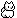

|
... The Forest of a Moonless Night ... あとがきのようなもの この作品は「夜歩く」「闇夜の混沌」「昏の道」に続くシリーズとして作成した絵本です 数年前に制作したものですが、ようやく公開することができました なぜ本文が英語なのかというと、英語の授業で作ったものだからです… 日本語版も作りましたが、英語版の方がよりファンタスティックというか 不思議な雰囲気を醸し出しているような気がして、こちらを採用しました。 英語の授業でなぜ絵本、と言う問題はおいておくとして… 完全に趣味に走って楽しく制作できました。 英文はちゃんと先生にチェックしてもらっていますが、 間違いを見つけてもつっこまずにいておいてください… 英語、苦手です  |
|
← ｜ |
|